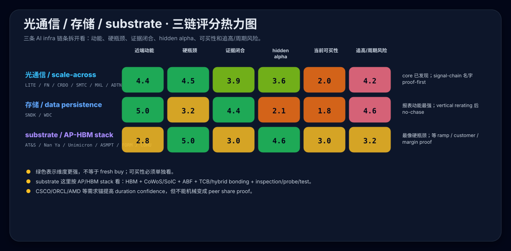

光通信、存储与substrate瓶颈对比
Language / 语言: 中文 | English
更新时间：2026-05-24 23:55 CEST 关联导航：互连、光器件与电源器件 · 半导体与基础算力 · 制造、封装与系统集成 · Agentic AI硬瓶颈与二级放大瓶颈-hidden treasure候选（内部维护页，未公开） · 什么值得买（内部维护页，未公开） · 方法与来源
这页回答什么
这页把三条容易混在一起的 AI infrastructure 链条拆开：
光通信 / 互连：解决 AI cluster 怎么连、怎么 scale-out / scale-across。存储：解决训练、推理、agentic workflow 产生的数据怎么落盘、保留、检索。advanced packaging / HBM stack（含 substrate / ABF / FC-BGA）：解决 HBM、CoWoS/SoIC、ABF、TCB/hybrid bonding、inspection/probe/test 这条 package chain 能不能可靠制造、封装、出货。
核心结论：
- 近端财报动能：
存储 > 光通信 > substrate。 - 硬瓶颈强度：
advanced packaging / HBM stack（含 substrate）≈ 光通信 / scale-across > 存储。 - hidden alpha 不再用单一排名压平：
AP/HBM stack的认知差最高；光通信 signal-chain新增 SMTC / MXL / ADTN 等 proof-first 机会；存储财务兑现最硬但 hiddenness 已被 rerating 压低。 - 当前买点纪律：高动能票大多已经进入
no-chase / pullback-only；substrate/AP stack 的机会更多在证据闭合和执行折价收敛，而不是已经爆出来的 revenue momentum。
2026-05-24 NVIDIA primary read-through 后，对“光通信 / 互连”的证据强度要再上调一档，但动作纪律不变。NVIDIA Q1 FY2027 Data Center networking revenue USD 14.8B、同比 +199%、环比 +35%，并在 primary materials 中命名 MRVL / COHR / LITE / GLW。区别是：MRVL / COHR / LITE / GLW 可写成 NVIDIA named direct；FN / MTSI / AAOI / CRDO / SMTC / MXL / ADTN / SANM 只能写 sector / technology read-through，除非另有各自 primary named agreement。
三链评分热力图

读法：绿色说明该维度更强，不等于 fresh buy；当前可买性 与 追高/周期风险 必须单独看。
三条线的第一性原理对比
| 维度 | 光通信 / 互连 | 存储 | substrate / ABF / FC-BGA |
|---|---|---|---|
| 核心问题 | AI 节点、机柜、cluster、region 之间怎么连 | AI 产生的数据、RAG、logs、checkpoint、warm/cold data 怎么存 | 高端 AI package 能不能制造、良率爬坡、通过客户认证 |
| 瓶颈类型 | scale-out / scale-across throughput bottleneck | utilization / data-persistence 放大瓶颈 | package-level hard bottleneck |
| 缺了会怎样 | GPU/accelerator utilization、跨集群调度和推理吞吐受限 | workflow 变慢、数据成本上升、检索/日志/训练数据链条变重 | AI GPU / ASIC / server CPU package 出货、良率或成本直接受限 |
| 扩容摩擦 | 客户认证、模块/器件产能、光源/DSP/良率、客户 capex 节奏 | NAND/HDD 周期、nearline qualification、客户消化、价格机制 | 新厂、ABF材料、层数/大尺寸/线宽线距、良率、客户认证、capex |
| 财务兑现速度 | 快，订单转收入周期相对短 | 快，本轮 SNDK/WDC 已经进报表 | 慢，需要看 ramp、客户、利用率、margin |
| 周期/价格战风险 | 高，模块和器件容易拥挤 | 高，NAND/HDD pricing 和 capex digestion 明显周期 | 中高，资本开支和良率风险高，但高端客户认证带来粘性 |
| 当前最容易犯错 | 把 800G/1.6T 景气直接外推成所有光票都能追 | 把 datacenter storage 财报爆发当成 HBM 级硬短缺 | 因为财务兑现慢而低估底层瓶颈，或反过来把所有 ABF 名字都当便宜 |
公司对应关系
| 股票表达 | 光通信 / 互连 | 存储 | substrate / ABF / FC-BGA | 对应关系解释 |
|---|---|---|---|---|
| 高 beta 直接受益 | CRDO、AAOI | SNDK | Nan Ya PCB、Unimicron、AT&S | 都是被 AI infra 重估的中间瓶颈；区别是 CRDO/SNDK 已经爆发，substrate 还在证据闭合。 |
| 高质量平台 / 龙头参照 | LITE、COHR、NOK、MRVL | WDC | SEMCO、Ibiden | LITE/COHR/MRVL 已有 NVIDIA named evidence；强公司不等于 fresh alpha。 |
| 复杂制造 / 良率交付 | FN | WDC/SNDK 的自有制造和供应链 | AT&S、Ibiden、Nan Ya PCB、Unimicron | FN 已经用 datacom 财报兑现；AT&S/Nan Ya/Unimicron 更像后续 ramp 与客户验证。 |
| 底层材料 / 器件 | MTSI、GLW、COHR 部分能力 | 无很纯的可比项 | Ajinomoto | GLW 已有 NVIDIA named optical-connectivity evidence，但仍是 lower-beta；MTSI 仍是条件型 read-through。 |
| broad group / 不够纯 | NOK、COHR 部分业务 | WDC 的周期和 broader storage 属性 | Toppan、LG Innotek | 方向真，但股票不会完全跟着单一细分逻辑走。 |
| 期权 / 观察票 | AAOI、部分 MTSI | SNDK 曾是，但现已重估 | Kinsus、Daeduck、LG Innotek | 可能有弹性，但证明链还没到核心仓位标准。 |
单名横向对应与当前动作
| 光通信 / 存储名字 | 最接近的 substrate 对应 | 谁的近端动能更高 | 谁的 hidden alpha 更高 | 当前动作 |
|---|---|---|---|---|
| CRDO | AT&S / Nan Ya PCB / Unimicron | CRDO | AT&S / Unimicron | CRDO 已是已发现互连主线，当前偏 reduce / no-chase；substrate 端更适合继续找认知差。 |
| LITE | SEMCO / Ibiden / Nan Ya PCB | LITE | Nan Ya PCB | LITE Q3 与 Q4 guide 很硬，但高位不追；Nan Ya 的 ABF 证据 serious，但也需回调。 |
| FN | AT&S / Ibiden / Nan Ya PCB / Unimicron | FN | AT&S | FN datacom 已进报表；AT&S 是执行折价是否收敛的 substrate 赌注。 |
| COHR | Ajinomoto / Toppan / SEMCO broad group 部分 | COHR | Ajinomoto 作为护城河 reference，不是买点 | NVIDIA named advanced-optics agreement 显著加厚 COHR proof，但债务/整合包袱仍在；Ajinomoto ABF moat 强但股票表达不纯。 |
| AAOI | Kinsus / Daeduck / LG Innotek | AAOI | Kinsus/Daeduck 仅在后续 proof 补齐时 | AAOI 订单弹性更直接；substrate 小候选更早期，proof-first。 |
| MTSI | Kinsus / Toppan / Ajinomoto 部分属性 | MTSI 或持平 | Kinsus 若 AI proof 补齐 | 都是“位置真、叙事不最性感、证据还需补”的条件型名字。 |
| SNDK | Nan Ya PCB / SEMCO / Unimicron | SNDK | Nan Ya / Unimicron | SNDK datacenter revenue 爆发最强，但 vertical rerating 后只 deep-dive / no-chase。 |
| WDC | Ibiden / SEMCO / Toppan broad benchmark | WDC | AT&S / Nan Ya / Unimicron | WDC 已把 AI storage 推到财务兑现；但仍是二级放大瓶颈，不是 package hard bottleneck。 |
近端动能排序
| Rank | 名字 / 组合 | 动能证据 | 风险折扣 | 动作含义 |
|---|---|---|---|---|
| 1 | SNDK | Q3 revenue USD 5.95B；Datacenter revenue USD 1.467B，+233% QoQ / +645% YoY；Q4 guide USD 7.75B-8.25B；多年 NBM customer commitments | NAND pricing、客户集中、合同价格机制、暴力重估后估值风险 | 最高动能，但 deep-dive / no fresh chase。 |
| 2 | LITE | Q3 revenue USD 808.4M，non-GAAP EPS USD 2.37，Q4 guide USD 960M-1.01B | 高位 price-discovery，云客户节奏和导入周期 | 光器件动能硬，但 no-chase。 |
| 3 | FN | Q3 revenue USD 1.2143B，non-GAAP EPS USD 3.72，Q4 guide USD 1.25B-1.29B；datacom programs 持续 | 客户集中、二阶 read-through、估值已认识 | 回调后更值得看，非 fresh chase。 |
| 4 | WDC | Q3 revenue USD 3.34B，+45% YoY；non-GAAP gross margin 50.5%；FCF USD 978M；AI 数据存储进入管理层核心口径 | HDD/nearline 周期、hyperscaler digestion、pricing durability | serious storage-infrastructure watch；pullback-only。 |
| 5 | SEMCO / Nan Ya PCB | SEMCO package-solution revenue +45% YoY；Nan Ya 2025 revenue +24.4% YoY 且 ABF roadmap 直指 AI server / ASIC / switch | 近期都已 rerate；需要下一季订单/毛利/客户证明 | serious substrate proof；等回调或确认。 |
| 6 | CRDO / AAOI | AEC/retimer/DSP 与 800G/1.6T hyperscaler 订单弹性 | 客户集中、价格战、市场已发现 | 高 beta，但纪律偏 reduce/no-chase 或 proof-first。 |
| 7 | AT&S / Unimicron | AI server substrate / FCBGA 位置真实；AT&S 有 Kulim/Leoben ramp 变量；Unimicron FCBGA 应用直指 AI Server/Switch/ASIC | 财务兑现和客户证明慢；ramp / execution risk | hidden-alpha research，不是近端 momentum。 |
硬瓶颈强度排序
substrate / ABF / FC-BGA：最接近 package-level hard bottleneck。高端 AI GPU / ASIC / server CPU 少了高端 substrate，封装、良率、出货和成本都会直接受限。真正要验证的是客户/产能/ramp/margin，而不是行业方向。光通信 / scale-out / scale-across：同样接近硬瓶颈。推理和 agentic workloads 会持续推高网络流量，800G/1.6T/3.2T、DCI、CPO/NPO、OCS 都有持续性。股票风险在于模块价格战、客户集中和拥挤估值。存储：本轮财务动能非常强，但更像二级放大瓶颈。AI 会制造大量数据，但 storage 的扩容与替代路径比 package substrate 更多，也更受 NAND/HDD pricing cycle 影响。
Hidden alpha 排序
| Rank | 名字 | 所属链条 | 为什么可能还有认知差 | 为什么不能直接追 |
|---|---|---|---|---|
| 1 | AT&S | substrate | 产品链位置真，市场可能仍按欧洲执行 / capex / ramp 风险折价；Kulim/Leoben 如果顺，会重写估值 | 折价也可能是合理执行风险；需要 utilization、客户、margin 证据。 |
| 2 | Nan Ya PCB | substrate | ABF roadmap 与 AI server / ASIC / switch 直接相关，2025 业绩修复也明确 | 已明显 rerate；下一季订单和毛利才决定能否升档。 |
| 3 | Unimicron | substrate | FCBGA / AI Server / Switch / ASIC 业务位置直接，旧 residue 里 business case 最强 | 当前估值不便宜，客户/产能证明仍需补。 |
| 4 | Kinsus / Daeduck | substrate | Kinsus substrate 纯度高；Daeduck FCBGA turnaround 有期权 | AI customer proof 和连续季度盈利质量不足。 |
| 5 | SMTC / MXL / ADTN | 光通信 signal-chain | 2026-05-14 新证据让 DSP / Signal Integrity / DCI recovery optionality 更直接 | 客户归因、量化 AI/DCI revenue、披露/法律风险仍未闭合；只能 proof-first。 |
| 6 | ASMPT / FORM / Technoprobe / COHU | AP/HBM tooling/test | HBM + CoWoS/SoIC + TCB/hybrid bonding + inspection/probe/test 让 bottleneck 从 substrate 扩成制造/测试链条 | 多数仍缺本 wiki 内完整 entity 与当前-live buyability；先做证据闭合。 |
| 7 | SNDK / WDC | 存储 | AI storage 从 roadmap 进入报表，旧 NAND/HDD 周期框架需要修正 | 市场已开始暴力重估；要验证合同质量和周期顶风险。 |
深入判断
1. 为什么 storage 近端最强，但不应压过 substrate 的瓶颈地位
SNDK / WDC 的变化是真实的。SNDK 的 datacenter revenue 和多年 NBM commitment 已经把它从普通 NAND 周期票推成 datacenter-flash contracting story；WDC 的高毛利、FCF 和 nearline roadmap 也证明 AI storage 不是空故事。
但 storage 的瓶颈性质不同。数据可以分层、压缩、cache、冷热分级、换介质、延后保留；pricing 也会被 NAND/HDD 供给周期影响。它可以赚钱，甚至短期动能最猛，但不等于 HBM/substrate 那种“少了就做不出高端 AI package”的硬短缺。
所以 storage 当前最好的问题不是“它是不是 AI 受益”，而是：
- datacenter / NBM commitment 的毛利质量是否可持续；
- 客户集中和 financial guarantee 是否会反噬；
- NAND/HDD pricing 是否在下一轮供给释放后正常化；
- 暴涨后的估值是否已经把新范式打满。
2. 为什么光通信动能很高，但高位更容易犯错
LITE / FN 已经给出足够硬的财报，CRDO / AAOI 也有很高弹性。agentic AI 会让网络压力从训练 cluster 扩到推理、企业 AI、多 agent、RAG、跨集群调度和跨 region 协同；因此光通信不是一轮 800G 景气就结束。
但这条线的股票层面很容易过热：
- 客户集中导致订单节奏被放大；
- 光模块 / 器件价格战会侵蚀毛利；
- 市场喜欢提前交易下一代速率；
- 一旦从
800G讲到1.6T / 3.2T / CPO，估值可能先于利润透支。
因此光通信里我更愿意区分：
LITE / FN：财报已证明，但等回撤或下一季确认；CRDO：主线很真，但已被发现，纪律偏 reduce / no-chase；SMTC / MXL / ADTN：signal-chain / DCI optionality 更直接，但客户归因、量化 AI/DCI revenue 和披露/法律风险仍未闭合；SANM / BELFB：AI/cloud EMS 或 data-center power/connectivity 证据更真，但还是二阶 attribution；AAOI：订单弹性高，但 proof-first；COHR / MTSI：长期位置真，但单名执行/归因还要跟。
3. 为什么 substrate 是更适合继续找认知差的地方
Substrate 的好处是：它更底层、更工程硬、更慢被完全定价。高端 ABF / FC-BGA 需要大尺寸、多层、细线宽线距、低翘曲、客户认证和良率爬坡。这个瓶颈不会因为买更多普通产能就立刻消失。
但它的问题也正是慢：很多公司不会像 SNDK/LITE/FN 那样很快把 AI 增量直接写进 revenue guide。投资上需要看：
- 新产能 ramp 是否顺；
- AI server / ASIC / switch substrate 的客户是否清楚；
- 高端 mix 是否改善毛利；
- 市场折价是误判还是合理执行惩罚。
当前 substrate 的分工：
AT&S：最值得深挖的 hidden candidate，核心是 execution discount 是否收敛。Nan Ya PCB：新增候选里证据最 serious，但已 rerate，等回调/确认。Unimicron：旧 residue 里 business case 最强，需客户/产能/margin 证据。SEMCO / Ibiden：最强 benchmark，不是 fresh alpha。Ajinomoto：ABF moat reference，不是纯股票表达。Toppan / Kinsus / Daeduck / LG Innotek：条件/期权/monitor，不能升太快。
当前可执行结论
| 目标 | 优先看 | 暂不追 | 核心原因 |
|---|---|---|---|
| 找最高近端动能 | SNDK、LITE、FN、WDC | 不在高位 fresh buy | 财报已爆，但估值和 tape risk 同步上升。 |
| 找 hidden alpha | AT&S、Nan Ya PCB、Unimicron；SMTC/MXL/ADTN；ASMPT/FORM/COHU | SEMCO / Ibiden 高位 benchmark；LITE/FN/SNDK 高位 | AP/HBM stack 与 optical signal-chain 更可能还有证据闭合 payoff，但都要等 customer/revenue/margin proof。 |
| 找回调买候选 | AT&S、Nan Ya PCB、FN、WDC、Unimicron | CRDO、SNDK、LITE 高位 | 买的是回撤后 thesis 未坏，不是追 vertical rerating。 |
| 做长期 reference | Ibiden、Ajinomoto、COHR、WDC | Toppan / LG Innotek 不宜过早核心化 | reference 负责证明链条，不等于最高赔率。 |
一句话压缩：
SNDK / LITE / FN / WDC是现在报表动能最强的四类表达。AT&S / Nan Ya PCB / Unimicron是更值得继续找认知差的 substrate 表达。SEMCO / Ibiden / Ajinomoto / COHR更适合作为质量 reference。- 真正的错误是把“动能最高”误当成“现在最好买”，或把“substrate 财务兑现慢”误当成“瓶颈不硬”。
后续验证 gates
| 链条 | 升级信号 | 降级信号 |
|---|---|---|
| 光通信 | LITE/FN 后续 guide 继续上修；CRDO/AAOI 客户扩散而非单客户放量；COHR/MTSI 的 AI optics revenue attribution 更清楚 | 订单集中、价格战、gross margin 下滑、客户 capex digestion |
| 存储 | SNDK NBM commitment 毛利质量和价格机制清楚；WDC nearline pricing / hyperscale qualification / FCF 持续 | NAND/HDD pricing 正常化、客户承诺降温、gross margin 回落、库存消化 |
| substrate | AT&S Kulim/Leoben ramp 顺；Nan Ya/Unimicron AI server / ASIC / switch substrate 订单和 margin 明确；SEMCO/Ibiden 继续验证高端需求 | 仍停留在 product roadmap，客户/产能/毛利不兑现；高位 rerating 后没有新 proof |
相关页面
- 近期研究主线与多维图表
- 互连、光器件与电源器件
- 半导体与基础算力
- 制造、封装与系统集成
- Agentic AI硬瓶颈与二级放大瓶颈-hidden treasure候选（内部维护页，未公开）
- AI硬件瓶颈-CPU是否像内存一样迫切
- 什么值得买（内部维护页，未公开）
- 方法与来源